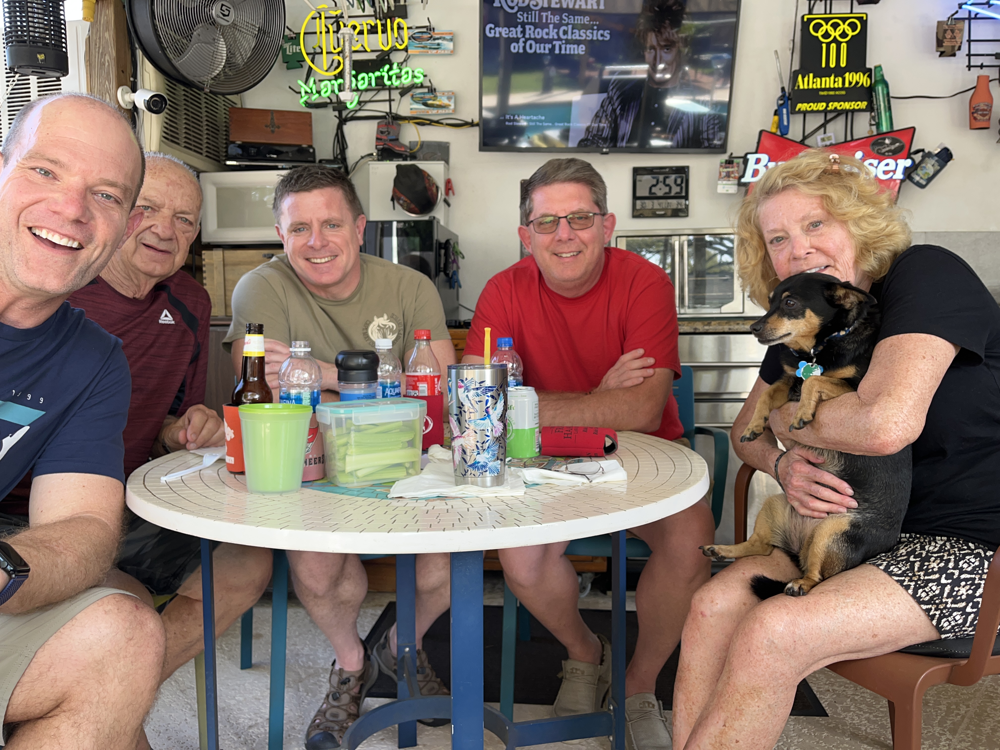
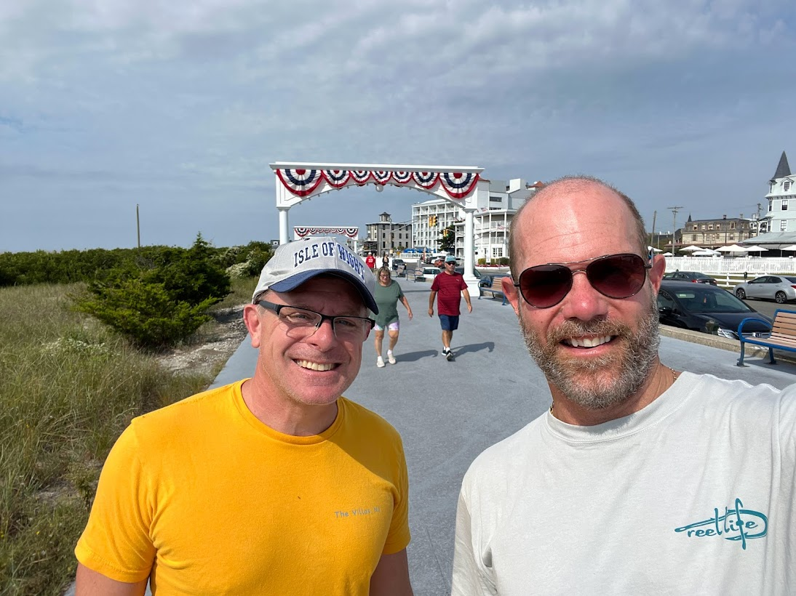
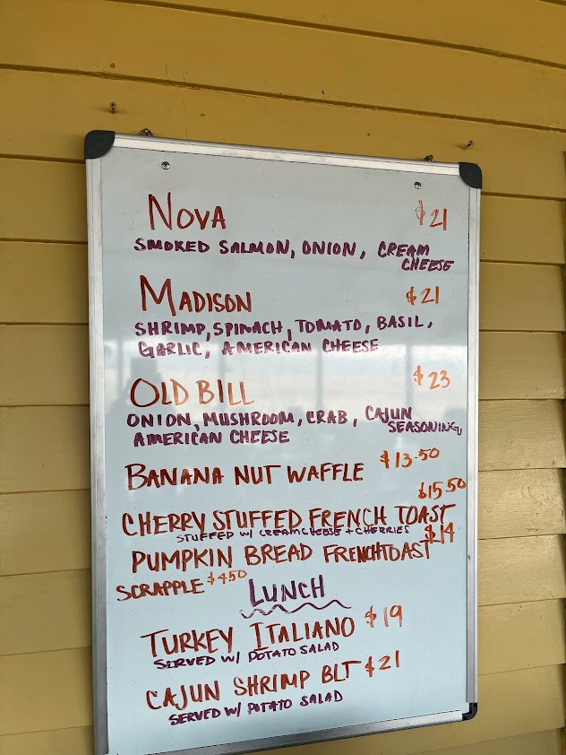
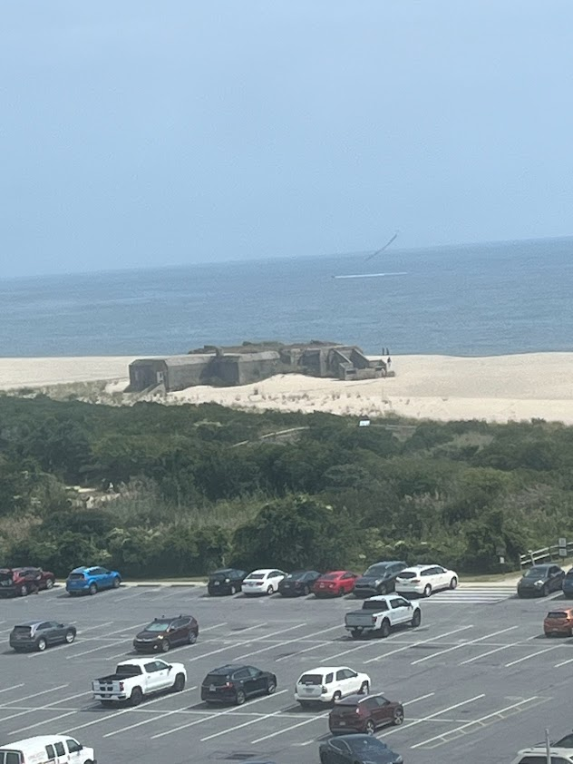
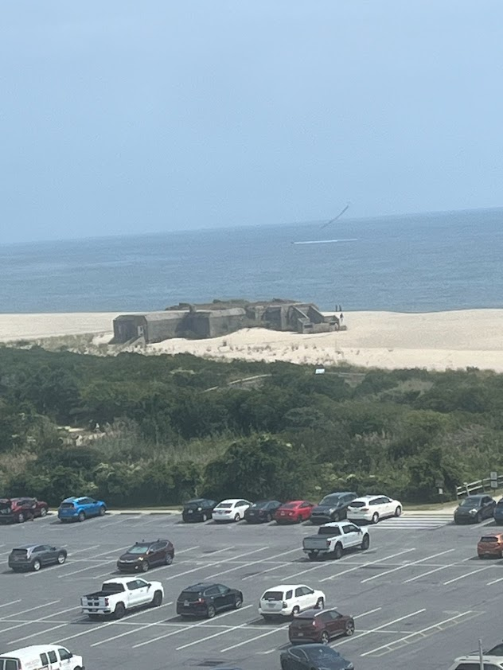
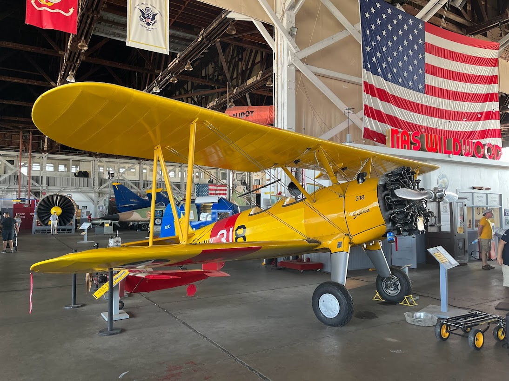
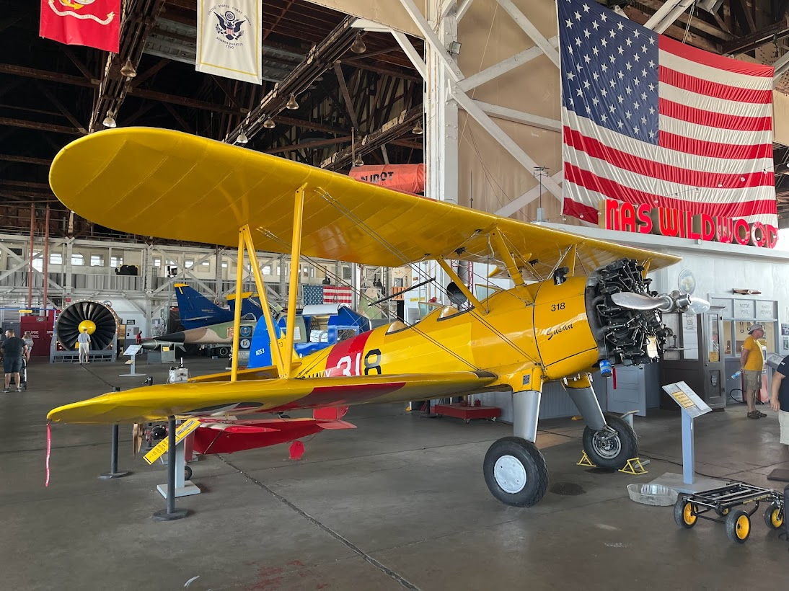

Reunion Kick-off at Camp Kruza
Coronageddon quarantine did me a solid. It helped reunite me with my fellow Star-Trek-loving, musical, writer geek New Jersey second cousin Tommy Ranisekski. We had last seen each other in 1989 when my grandma Laura and I had visited Philidelphia. The cousins' reunion started with chit-chat over the adventures and misadventures of the last few decades of our lives. The reunion moved to Facetime, then finally, to my childhood home and parent's current slice of paradise in Clearwater, complete with pool, surf and turf, drinks, and backyard patio with neon signs, and Pandora playing a constant stream of classic rock, pop, and Jimmy Buffett tunes. Tommy's brother Louie joined us since he lives less than an hour from my folks, and I in my family-tree fecklessness, at first mistook him for his son. Oh well, there's a few "Louie's" in their family... but with a sunny Florida February day, I couldn't exactly blame it on bad lighting. Roxy joined us, too, and my folks and cousins reminisced over the old days in Phildephia, PA and Wildwood, NJ. I mostly listened and enjoyed. But we all celebrated the reunion and finished a fine three-hour picnic feeling, full, happy, and feeling loved... because we were all three.

test link
Saturday 2023-09-08 in Cape May

After a good night sleep on an airbed in Tommy's living room at his home in Villas, he drove us to downtown Cape May to start out our first full day of vacation.
McGlades, next to the convention center, greeted us with breakfast by the shore, and me to an Old Bill omelette. Next, the Beach Avenue promenade welcomed us with patriotic flair, and Congress Hall with old-but-renovated hotel charm to start our day. Washington Street pedestrian Mall gave Tommy a chance to show me his fragrant place of business, Bath Time, which sold me two bars of soap and two candles. The shop Love the Cook, two doors down, sold me a bag of strawberry-chocolate coffee, which was one of the best flavored coffees I've ever tasted.



Next, we heard echos of World War II at the lookout tower, lighthouse, and bunker. The lighthouse tour guide recounted the history. For the first two full years the USA spent in WW1, the air and sky above Cape May looked serene, but ship convoys proved an underwater turkey shoot for German U-boats lying in wait below the surface. It took two years for aerial surveillance and ship sonar and targetting depth charges to turn the underwater tide and keep the U-boats at bay.
 

Wildwood Naval Air Station Air Museum's old bi-planes and bronze plaques told stories of heroism. Kilroy, the graffiti patron saint, reminded us allied soldiers etched him into walls all over Europe to keep other fighters' spirits up and lonliness down. Norma Jean Dogherty reminded us she worked as a riverter in the Radioplane factory before she became Hollywood's Marylyn Monroe.

 
